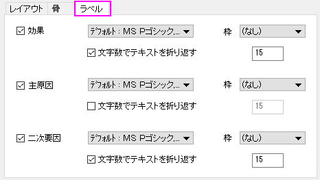

PD-Labels-tab-CauseEffect
このタブでは特性要因図のラベル設定が可能です。

このコントロールを使用して、フォントを設定したり、枠を追加したり、効果のラベルのテキストを折り返すことができます。
このコントロールを使用してフォントを設定したり、枠を追加したり、主原因のラベルのテキストを折り返すことができます。
このコントロールを使用してフォントを設定したり、枠を追加したり、サブ原因のラベルのテキストを折り返すことができます。